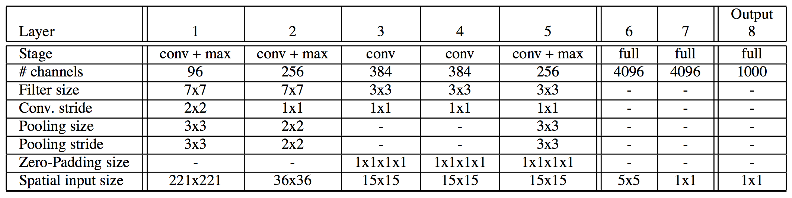
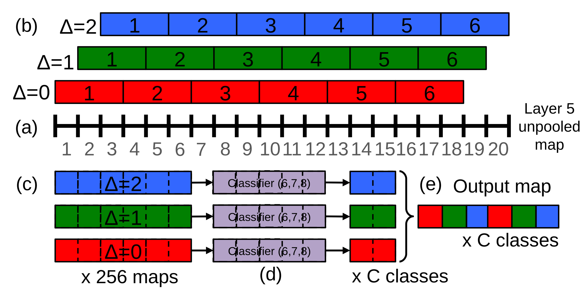
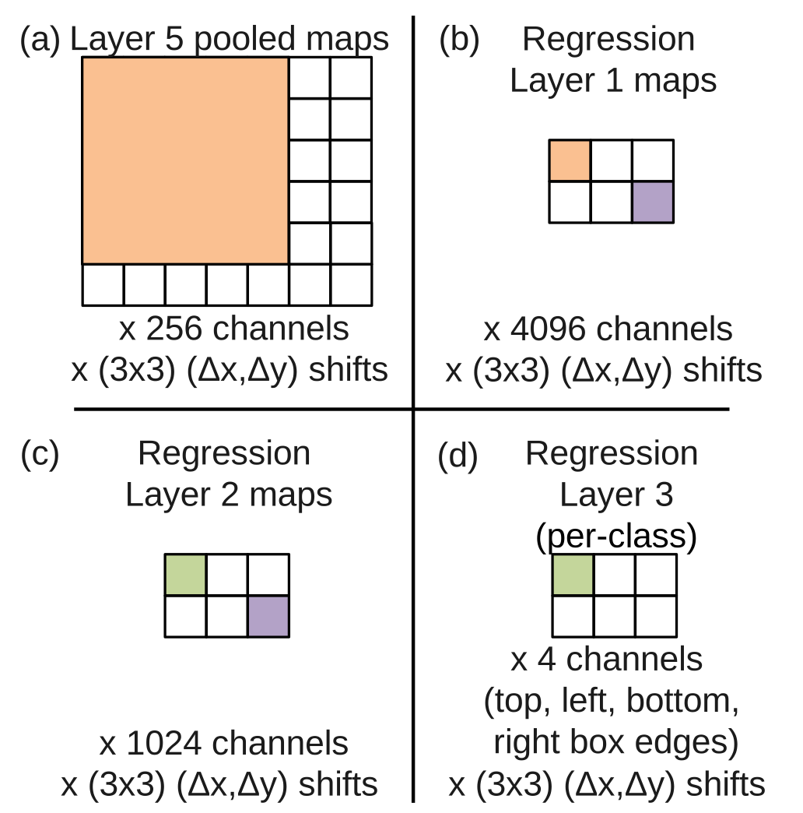
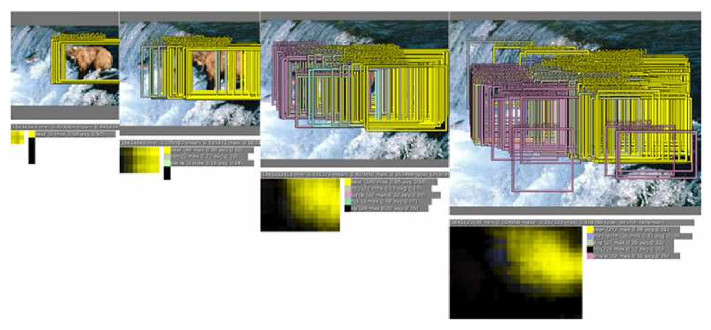

OverFeat Integrated Recognition, Localization and Detection using Convolutional Networks
更新日期:
CNN Pooling 层的改进，以及用回归预测 object 位置。
Abstract
本文利用ConvNets整合了classification, localization, detection。利用multi-scale和sliding window与ConvNets结合达到了很好的效果。本文还介绍了一种通过积累predicted bounding boxes来detect和recognize的方法。本文的方法在ILSVRC2013上测试，localization的效果领先，detection和classifications也有相当不错的效果。
Introduction
ConvNets的优点是训练从头到尾不需要人工干预，缺点是对标签的依赖过强。
- 本文的主要目的是训练出一个可以classify、locate、detect的ConvNets，且所有性能都能提升。
- 本文还介绍了一种通过积累predicted bounding boxes来detect和recognize的方法。
- 实验在ImageNet LSVRC 2012和2013上进行，在locate和detect上达到当前最新水平。
- ImageNets中的分类数据的size和position差异大，第一种方法用滑窗解决会带来圈偏或多圈的问题，第二种方法是来预测目标的位置和窗的大小，第三种方法是积累每种类别在每个位置和size的可能性。
- 利用分割的方法实现localization好处是bounding contours不必是矩形，region也无需完美地划定目标。缺点是需要像素级的labels来训练。现在这种方法比较流行，它减少了搜索比例，可以搭配更强大的分类器，但本文的方法却超过了它。
- Krizhevsky说过ConvNet可以用在classification、localization但未发表。
Vision Tasks
本文按照classification, localization, detection顺序一环扣一环，它们共用同一构架，同一套特征。
classification, localization都可以有5个可能的结果。bounding box的重合率必须达到50%。
每个返回的bounding box必须被正确labeled（即两者不能分离）才认为正确，在同一图像中检测检测的结果数目可以是0～X。
Classification
本文采用的分类器结构与 best ILSVRC12 architecture by Krizhevsky 相似，但许多训练特征未尝试，我们将在第6部分讨论这个问题。
Model Design and Training
训练模型同Krizhevsky提出的fixed input size approach（A. Krizhevsky, I. Sutskever, and G. E. Hinton. ImageNet classification with deep convolutional neural networks. In NIPS 2012: Neural Information Processing Systems. ）但classification变为multi-scale。
模型详细结构见图1。Layers 1-5 与 Krizhevsky方法相似用了rectification (“relu”) non-linearities and max pooling，但有以下区别：没有用contrast normalization、pooling region不重叠、1st 2nd layer feature maps更大。
图2给出了第1、2层的filter，第1层主要是orientated edges、patterns、斑点，第2层形式多样diffuse、strong line structures、oriented edges。

Multi-Scale Classification
滑窗的方法在ConvNets下十分高效，这部分方法同Krizhevsky，只不过我们探测的是整个图像。
pooled和presented to the classifier的过程

Results
实验对比，与期望相同，fewer scales影响性能，单模型效果最糟糕。fine stride technique对性能有微小提升，但它对multi-scale gains非常重要。
ConvNets and Sliding Window
从学习的角度看ConvNets十分高效，原因是它共享多重位置中权重使得filter更加一般化，以及通过积累梯度使学习速度更快。
相对于其他结构必须计算整个流程，ConvNets在密集的应用中速度很快，没有多余计算。
ConvNets中相邻的输出单元共享低层。（见图3）
最后一层完全连接connected linear layers，detection时它直接被1x1的卷机核替代，然后仅仅就是卷积、max-pooling、thresholding operation。
Localization
把分类器层替换为regression network来训练预测对象bounding boxes，然后结合这些预测核每个位置分类器的结果。
Generating Predictions
同时运行classifier和regressor networks，只有最后一个regression layers在classification network计算完后需要再计算。最后可以得到每个bounding boxes的置信区间。
Regressor Training
结构见图5，它的输入是第5层的pooled feature maps，有2个完全连接size 4096、1024 channels隐层，每个类的输出层不同。有4个unit specify the coordinates for the bounding box edges。
前面的multi-scale能提升预测的性能

Combining Predictions
利用图7的greedy merge strategy预测位置，算法如下：
match score是两个bounding boxes中心的距离和它们交叉面积之和。
box merge计算两bounding boxes的coordinates的平均值。
最后的预测是找maximum class scores的那个merged bounding boxes。
图4中给了一个合并的例子，3.2中的方法提高预测效果。最后bounding合并并积累成少量的对象。

Detection
除了spatial manner以外与分类相同，多重位置被同时训练，不同在于localization，它还是预测了位置，boot- strapping passes。we perform negative training on the fly？选每幅图中随机的一个负样本。
Discussion
overfeat ranks 4th on classification, 1st on localization and 1st on detection.
本文解释了ConvNets在localization and detection上高效的原因。
提出了一个结合分类、定位、检测的流程，它共享特征直接从像素点学习。它用multi-scale、sliding window方法。
overfeat可以在以下方向改进：
- localization时没有实时反馈到整个网络，反馈后效果会更好。
- 本文使用 l2 loss（衰退网络的参数），而不是直接优化intersection-over-union (IOU) 准则。
- 变换bounding box的参数帮助输出去相关，这有助于网络训练